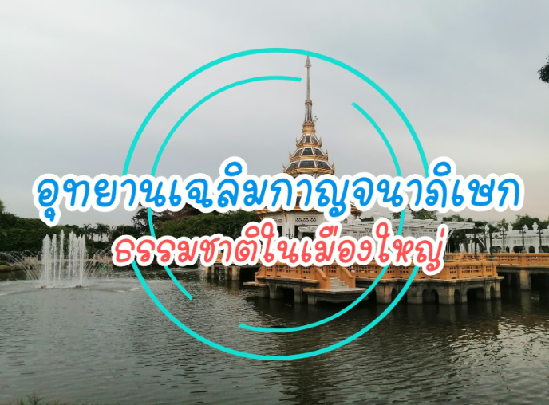
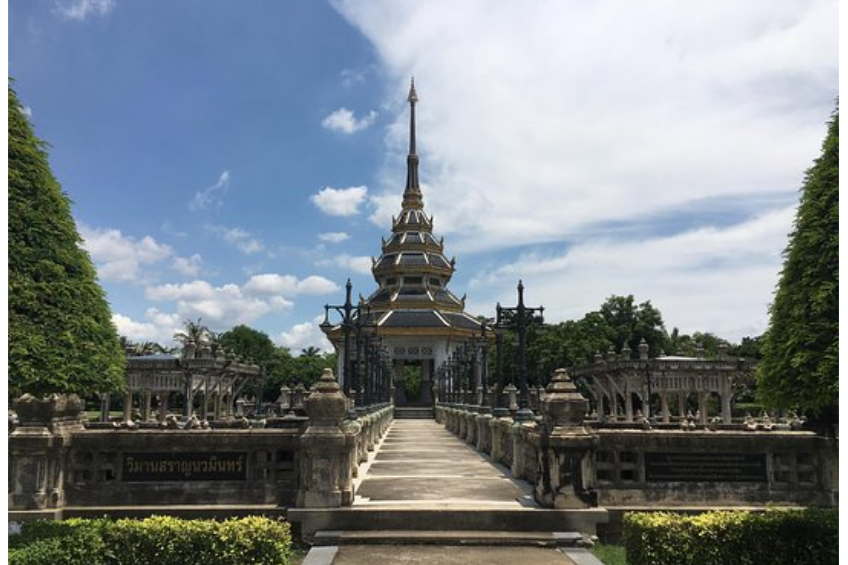
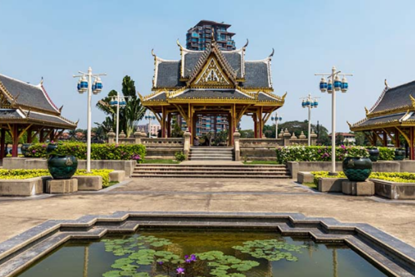
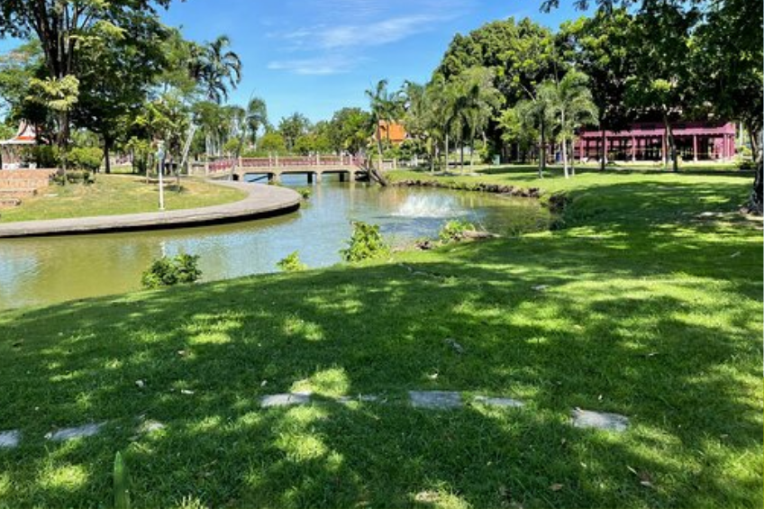

อุทยานเฉลิมกาญจนาภิเษก

อุทยานเฉลิมกาญจนาภิเษก ถือเป็นสถานที่ท่องเที่ยวธรรมชาติที่ผู้คนภายในจังหวัดนนทบุรี รู้จักและนิยมมาเป็นอย่างมาก ซึ่งตั้งอยู่ริมเเม่น้ำเจ้าพระยาติดกับวัดเฉลิมพระเกียรติวรวิหาร ในเขตเทศบาลบางศรีเมือง อ.เมืองนนทบุรี จ.นนทบุรี โดยภายในอุทยานจะประกอบด้วยสิ่งปลูกสร้าง สนามเด็กเล่น สวนดอกไม้ และพื้นที่ใช้วิ่งออกกำลังกายซึ่งเปนถนนยาวรอบอุทยาน

วิมานสราญนวมินทร์ ถูกสร้างขึ้นท่ามกลางสระน้ำและมีสะพานทางเดินยื่นออกมายังฝั่งให้สำหรับเดินเข้าไปชมได้ รอบๆวิมานจะประดับไปด้วยน้ำพลุ ทันทีที่คุณเดินเข้ามาในอุทยานจะเห็นวิมานสราญนวมินทร์ตั้งตระหง่านสีทองอร่าม

ทั้งนี้ ภายในอุทยานเฉลิมกาญจนาภิเษกแห่งนี้ ยังมีโซนที่ชื่อว่าอุทยานทุเรียนนนท์ ซึ่งในโซนนี้ จะมี ต้นไม้มงคลหลายชนิด ปลูกคละเคล้ากันไป ทำให้ได้บรรยากาศเหมือนอยู่ในสวน

นอกจากการพักผ่อนในสถานที่ร่มรื่นที่เต็มไปด้ว่ยร่มไม้ใหญ่แล้ว สถานที่ ที่ทุกคนไม่พลาดนั่นก็คือ จุดชมวิวริมเเม่น้ำเจ้าพระยานั่นเอง นับเป็นสถานที่ที่สวยงามและประดับตกแต่ง เต็มไปด้วยต้นไม้นานาพันธุ์ ดูแล้วรู้สึกผ่อนคลายเป็นจุดถ่ายรูปสวยๆในยามเย็นบรรยากาศ